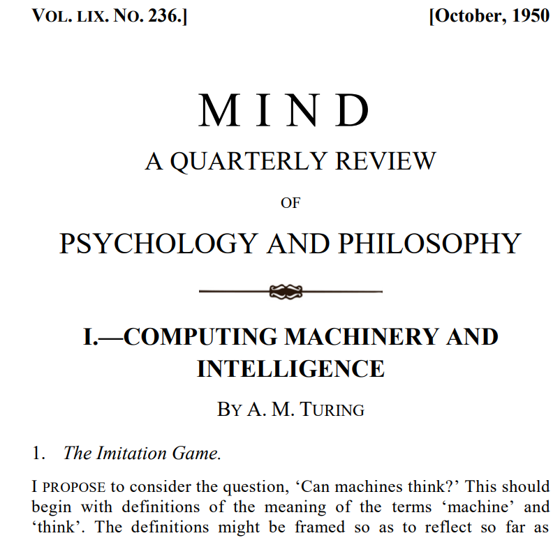
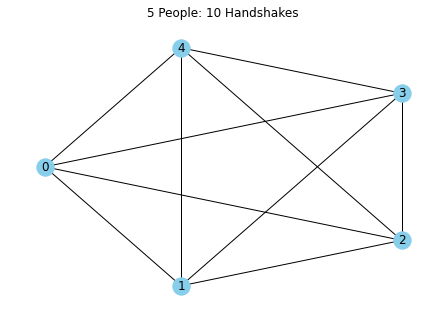
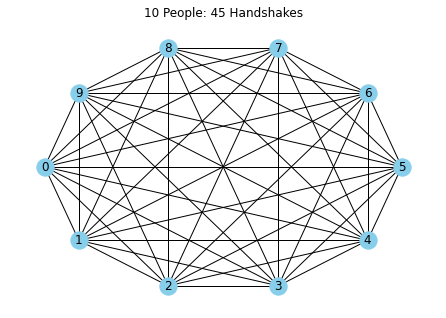
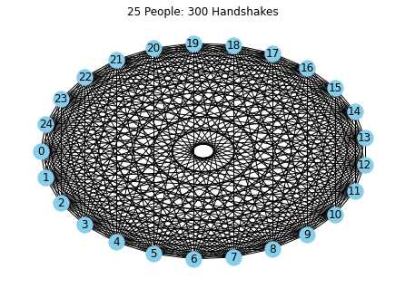

Authenticity, Humean Empiricism, Combinatorics, & Synthetic Training Data
Like thousands of other Saturday nights in human history, a good friend and I enjoyed dinner together last weekend. After hearty servings of spaghetti aglio e olio, our conversation meandered from politics, to Korean movies, Mad Men, the Lex Fridman podcast, Swiss watches, our Italian-American heritage, the future, being a dreamer vs. a realist, relationships.
By brief description alone, I wouldn't blame anyone for saying this sounds like "just another night." But I would be willing to bet my life that our conversation, in the order and selection of the words which were said, even the order of the topics discussed, was entirely novel. I mean, it had never happened verbatim before. By that definition, it was unique, original, and authentic.
Authenticity & Being Interesting
I think one of the worst, most soul-crushing insults is to be called boring. It might sound cliché, but everyone has something to bring to the table: a unique set of circumstances, preferences, goals, and a boundless imagination. Just like my friend and I's dinner conversation, surely no singular life has progressed in the exact sequence of events and experiences as another one. Sure, there are natural clusters of various flavors of upbringings and striking similarities (e.g. growing up in suburban America like myself), but to render each effectively redundant is overtly dehumanizing. Calling someone boring is actually closer to calling that person's life utterly insignificant. It's no surprise then that we're caught in an infinite loop to prove our authenticity to each other via outlets like social media, our various accomplishments, personal websites and blogs like this one, and stylistic choices like our clothing.
The current reality, however, is that this is becoming an ever more daunting task in the age of performant large language models. Outputs generated from LLMs are astonishingly difficult to distinguish from raw human output. These outputs now reside freely in our digital universe, detected only from negligence (e.g. forgetting to omit textual breadcrumbs like "Certainly!" or "as a large language model...") or a change in tone that is so off-brand it could only involve a machine's touch.
LLMs have also irrevocably raised the bar for producing high quality work online. A co-worker and I actually had a great exchange on this recently. We both realized that text provably written before chatGPT's November 2022 launch ought to be treated differently, sort of how we hold handmade goods in higher regard compared to their mass-produced counterpart. But that's the past. We've now entered an age where we're in an endless Turing Test against increasingly formidable opponents. Where do we turn, if not to win at this test, but to at least stand a chance?
Come stai?
My late grandfather was a very active member of Boston's Italian-American community, and I'm very proud of my Italian heritage. So naturally, these days sto imparando l'italiano (I'm learning Italian), mainly on Duolingo. But unfortunately, I only have about 4 months or so under my belt (I'm A1, barely). So it's hard for me to hold any sort of meaningful conversation in Italian. Sure, I can greet a friend come stai (how are you?) and answer sto bene, grazie! but I'm doomed in a Turing Test, of course. I'm no better than a rudimentary machine output. But I'd argue that a conversation that doesn't escape formalities isn't a conversation at all.
Recently, I've been re-visiting a book I read in my undergrad studies called The Most Human Human by Brian Christian, which, very presciently (written in 2011), recounts the author's battle in a Turing Test to prove to human judges he is not a chat bot. The main challenge he faces is to escape the gravity of mundane conversational regularities like formal greetings and tired subject matter. There is something deeply intertwined, I believe, between our quest for authenticity and purported ability to form original ideas.
Hume's Origin of Ideas
The 18th century Scottish philosopher David Hume offered a provocative take on idea generation in his Enquiries Concerning Human Understanding. To Hume, our seemingly boundless imagination is actually a ruse. Hume's metaphysical worldview destroys any notion of a human's ability for a priori original thought. His argument is nicely summarized in this passage from Enquiries (my emphasis added).
"But though our thought seems to possess this unbounded liberty, we shall find, upon a nearer examination, that it is really confined within very narrow limits, and that all this creative power of the mind amounts to no more than the faculty of compounding, transposing, augmenting, or diminishing the materials afforded us by the senses and experience. When we think of a golden mountain, we only join two consistent ideas, gold, and mountain, with which we were formerly acquainted. A virtuous horse we can conceive; because, from our own feeling, we can conceive virtue; and this we may unite to the figure and shape of a horse, which is an animal familiar to us. In short, all the materials of thinking are derived either from our outward or inward sentiment: the mixture and composition of these belongs alone to the mind and will. Or, to express myself in philosophical language, all our ideas or more feeble perceptions are copies of our impressions or more lively ones."
The Humean empiricist view of the world asserts that our ideas are no more than simple amalgamations of things we've already seen and learned in the past. When we arrive at "ideas" we are just sampling from our prior set of experiences. In this way, the empiricist view of human thought does not allow for much distinction between us and today's LLMs, which are trained on past ideas circulating on the internet.
But this is a debate that dates back to the original conception of the Turing Test itself. In Turing's famous 1950 paper Computing and Machinery Intelligence, he addresses an earlier objection to a machine's ability to conceive of original thought from English mathematician Ada Lovelace. In what Turing called "Lady Lovelace's Objection", Lovelace stated that "The Analytical Engine has no pretensions whatever to originate anything. It can do whatever we know how to order it to perform."

Turing's response is aligned with Humean empiricism: "A variant of Lady Lovelace’s objection states that a machine can ‘never do anything really new’. This may be parried for a moment with the saw, ‘There is nothing new under the sun’. Who can be certain that ‘original work’ that he has done was not simply the growth of the seed planted in him by teaching, or the effect of following well-known general principles."
Some may succumb to the temptation to simply accept human mediocrity. But I think there is a crucial omission in the empiricist argument, arising from the nature of combinatorics.
Handshakes
One of the first exercises from a basic course on combinatorics or probability theory will often be the handshake problem. Given a room of n people, how many possible unique handshakes will occur if everyone meets everyone else? This is known as a "complete graph". With 5 people, there are 10 possible connections, 10 people 45 possible connections, 25 people 300 possible connections. We can see this below.
import networkx as nx
from matplotlib import pyplot as plt
def generate_handshake_graph(num_people):
"""Generate a complete graph for a given number of people."""
G = nx.complete_graph(num_people)
return G
def plot_network(G, title):
"""Plot the graph using networkx and matplotlib."""
pos = nx.shell_layout(G)
nx.draw(G, pos, with_labels=True, node_color='skyblue')
plt.title(title)
plt.show()
def handshake_problem(num_people):
"""Simulate the handshake problem for a given number of people."""
G = generate_handshake_graph(num_people)
title = f'{num_people} People: {len(G.edges())} Handshakes'
plot_network(G, title)
if __name__ == "__main__":
# Number of people for each simulation.
people_list = [5, 10, 15, 25]
for people in people_list:
handshake_problem(people)



The set of all possible combinations of ideas is unimaginably large. Hume's assertion that human thought is merely limited to combinatory ideation is at odds with the nearly limitless potential combinations of ideas. Yet, somehow humans have arrived at the most fascinating corners of this giant expanse of possible permutations. This suggests, I believe, an innate ability for humans to conduct a priori reasoning, otherwise, how would we ever get to the most interesting corners of the idea space with limited time?
Ever the champion of human intuition and reason, Immanuel Kant's appeal to a priori reasoning in absence of experience aligns with this view. I'm not a Kantian scholar, but I would reason that if he were alive today, he would deem LLMs empirical machines capable only of creating a posteriori manipulations.
This of course doesn't mean LLMs are not useful, far from it. But there are important implications I think in training and fine tuning the next iteration of models. An outstanding question is the extent to which synthetic training data will adequately provide signal to improve model outputs. In other words, can a model's outputs be informative for teaching a future version of itself? One could imagine a model in conversation with itself, for example, creating new textual data that carries some new information. One idea I've had: have an LLM role play as characters from two distinct historical periods (e.g. ancient Rome & 17th century colonial America) and talk with each other. Of course, this conversation has never happened because of the natural limits of space and time. But will we truly encapsulate the person from that time period? Or will it simply be a function of our modern interpretation scattered across the internet? Ultimately, I think for this sort of pure synthetic training data to work, there needs to be a strong belief in the model's ability to conduct a priori reasoning.
Man is the astronomer
I don't know what the answer is to find authenticity, but perhaps it lies in the question itself. The fact that we even reason about the origin of thought is proof alone that we can use our intuition to intelligently traverse the combinatorial expanse of possible ideas.